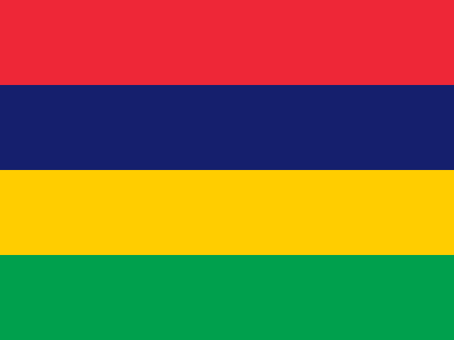

Question 121

Flag / Country🟩 Independent
Your answer: japanCorrect: Japan
Capital🟩 Independent
Your answer: tokyoCorrect: Tokyo
Language🟩 Independent
Your answer: japoaneseCorrect: Japanese
Japanese spelling accepted.
Batch 13 · Q121–Q130 · 25 October 2026 · 30/30 Independent
| Score | Flags / Country | Capitals | Languages |
|---|---|---|---|
| Pure | 10/10 (100%) | 10/10 (100%) | 10/10 (100%) |
| Pure + Assisted | 10/10 (100%) | 10/10 (100%) | 10/10 (100%) |
| Independent | 10 | 10 | 10 |
| Assisted | 0 | 0 | 0 |
| Wrong | 0 | 0 | 0 |
| Cancelled | 0 | 0 | 0 |
| Score | Flags / Country | Capitals | Languages |
|---|---|---|---|
| Pure | 130/130 (100%) | 130/130 (100%) | 130/130 (100%) |
| Pure + Assisted | 130/130 (100%) | 130/130 (100%) | 130/130 (100%) |
| Independent | 130 | 130 | 130 |
| Assisted | 0 | 0 | 0 |
| Wrong | 0 | 0 | 0 |
| Cancelled | 0 | 0 | 0 |
Japanese spelling accepted.

lilingwi accepted as Lilongwe phonetic spelling.

magadeshou accepted as Mogadishu/Muqdisho phonetic; Arabic official.

Mauritius country spelling; French widely used/recognized.

Correct first attempt.

Andorra capital accepted as Andorra la Vella by explicit permanent project shorthand rule.

Correct first attempt.

stokholm accepted recognizable Stockholm spelling.

Correct first attempt.

Correct first attempt.
| Q | Your Country | Correct Country | Flag | Your Capital | Correct Capital | Capital | Your Language | Correct Language(s) | Language |
|---|---|---|---|---|---|---|---|---|---|
| 121 | japan | Japan | 🟩 Independent | tokyo | Tokyo | 🟩 Independent | japoanese | Japanese | 🟩 Independent |
| 122 | malawi | Malawi | 🟩 Independent | lilingwi | Lilongwe | 🟩 Independent | english | English; Chichewa (national) | 🟩 Independent |
| 123 | somalia | Somalia | 🟩 Independent | magadeshou | Mogadishu (Muqdisho) | 🟩 Independent | arabic | Somali; Arabic | 🟩 Independent |
| 124 | maurituis | Mauritius | 🟩 Independent | port louis | Port Louis | 🟩 Independent | french | English (parliament); French; Mauritian Creole (spoken) | 🟩 Independent |
| 125 | netherlands | Netherlands | 🟩 Independent | amsterdam | Amsterdam | 🟩 Independent | dutch | Dutch | 🟩 Independent |
| 126 | andorra | Andorra | 🟩 Independent | andorra | Andorra la Vella / Andorra | 🟩 Independent | catalan | Catalan | 🟩 Independent |
| 127 | haiti | Haiti | 🟩 Independent | port au prince | Port-au-Prince | 🟩 Independent | french | Haitian Creole; French | 🟩 Independent |
| 128 | sweden | Sweden | 🟩 Independent | stokholm | Stockholm | 🟩 Independent | swedish | Swedish | 🟩 Independent |
| 129 | germany | Germany | 🟩 Independent | berlin | Berlin | 🟩 Independent | german | German | 🟩 Independent |
| 130 | peru | Peru | 🟩 Independent | lima | Lima | 🟩 Independent | spanish | Spanish; Quechua; Aymara (regional) | 🟩 Independent |
All 30 Independent without clues. Q126 Andorra capital accepted as established Andorra la Vella shorthand; Q123 Arabic correct for Somalia; Q124 French qualifies in Mauritius. Original attempts preserved in event and report JSON.
130 / 195 countries · Batch 13 of 20 complete · 65 remaining
Combined Pure 390/390: Flags 130/130; Capitals 130/130; Languages 130/130.